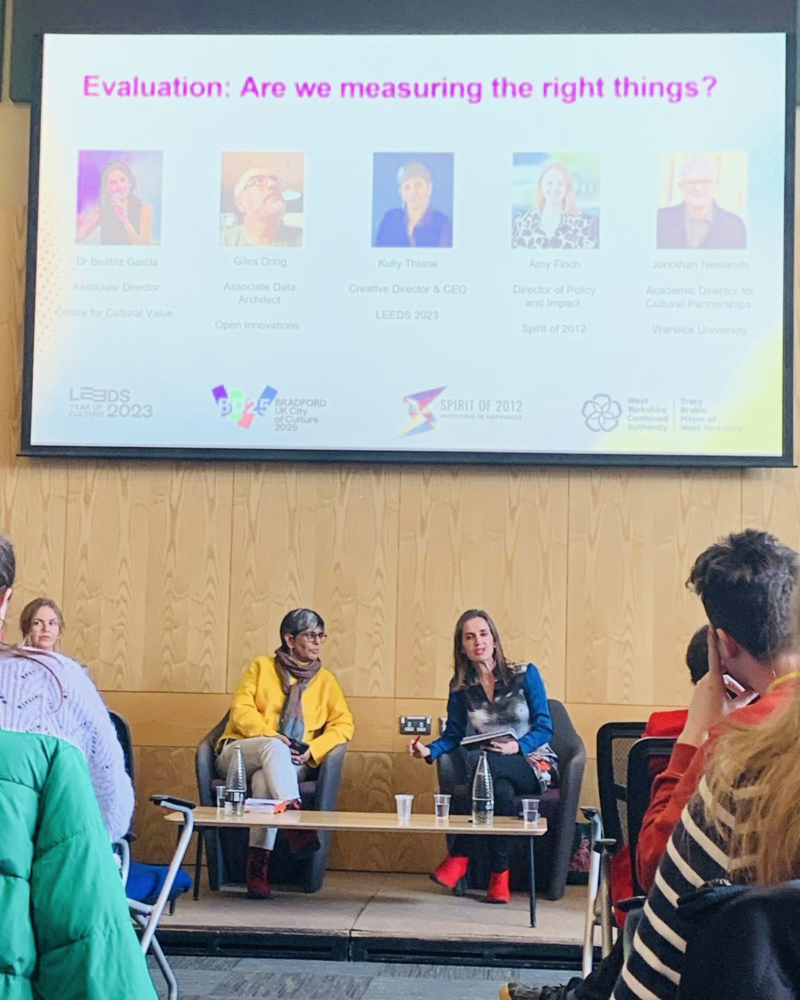

Measuring what culture does
The most valuable things culture does for a city are often the hardest to count. I design evaluation frameworks that capture them anyway: long-run, mixed-method and built in from the start, so that programme and impact connect from day one.

Frameworks
From one city to whole programmes
Impacts 08, the Liverpool model
A longitudinal, multi-method programme on Liverpool 2008, with more than 20 specialist reports, that became the reference model for cultural impact evaluation. Creating an Impact
Cultural Olympiad evaluations
The first national evaluation of a Cultural Olympiad, for London 2012, and the evaluation of Paris 2024's 2,596 labelled projects. Olympic research
A common framework for Europe
The Capitals of Culture Policy Group's international framework of good practice in research and delivery, built with five Capital of Culture cities for the European Commission. Read the framework
Mixed methods for the UK cultural sector
As Associate Director of the Centre for Cultural Value, with Jonothan Neelands: Making Data Work (2022) and Evaluation for Change (2024), a guide to planning a mixed-methods framework. Evaluation for Change
Culture and sustainable development
UK-wide and European consultations on principles and frameworks for assessing culture's contribution to sustainable development, including the UN Sustainable Development Goals, and the SDG Lab for Culture Next.
Baselines and monitoring
The Culturometer, the baseline framework for Nikšić 2030, and the international board of Monitor 2024, assessing Bodø 2024. Capitals of Culture research
Evaluation record, selected
Publications
- 2024Evaluation for Change: A Guide to Planning a Mixed-Methods Framework for Evaluation, with J. Neelands. Centre for Cultural Value.
- 2022Making Data Work: A Scoping Study to Develop a Mixed-Methods Evaluation Framework for Culture, with J. Neelands and colleagues. Centre for Cultural Value.
- 2017Connecting Ground: Shakespeare Lives and Perceptions of the UK in Russia, China and the Horn of Africa, with A. Peate, T. Cox and S. Crone. Institute of Cultural Capital, for the British Council.
- 2011Impacts 08 – the Liverpool model: a framework for impact research in Liverpool 2008. In Osservare la cultura. Franco Angeli.
- 2010Creating an Impact: Liverpool's Experience as European Capital of Culture, with R. Melville and T. Cox. University of Liverpool.
- 2007Impacts 08 Baseline Report, with R. Melville and P. Campbell. Impacts 08.
- 2006–2010Media Impact Assessment, part I and part II: press analysis of Liverpool 2008. Impacts 08.
- 2005What is cultural policy research?, with A. Scullion. International Journal of Cultural Policy.
Talks
Speaking →UK Evaluation Society · Creative Prague · LUCI, Lyon · A to Z Sofia Jazz Festival · National Association of Art Museums, Finland · ENCATC European Cultural Statistics Seminar · European Capital of Culture Forum, Kaunas · Spirit of 2012
Watch
Writing
Posts from the archive, newest first
Need to show what your cultural programme achieved?
Baselines, indicators and long-term frameworks that measure what matters, designed in from day one. In English, Spanish, Catalan or French.
Other research themes
All research →From Sydney 2000 to Milano Cortina 2026: how the Games use culture, and what it leaves behind.
Open the theme → European Capitals of CultureForty years of the programme, from Glasgow 1990 and Liverpool 2008 to Nikšić 2030.
Open the theme → Cities, placemaking and regenerationCulture-led regeneration, city branding and creative clusters.
Open the theme → Festivals and major eventsCommonwealth Games, Cities of Culture, festivals and their legacies.
Open the theme →